리눅스마스터-2급 (2009-03-15 기출문제)
1과목: 리눅스 운영 및 관리
1. 리눅스 표준 디렉토리 구조에 대한 설명으로 틀린 것은?
- / 디렉토리는 최상위 디렉토리로 루트 디렉토리라고 한다.
- /home 디렉토리는 일반 사용자의 독립적인 공간이 되는 홈 디렉토리로 사용된다.
- /usr/sbin 디렉토리는 패키지 설치 시, 사용자가 컴파일한 프로그램이 설치된다.
- /var/log 디렉토리에는 로그 파일이 저장된다.
(정답률: 77%)

2. 다음 명령 실행 결과에 대한 설명으로 틀린 것은?
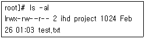
- 파일의 소유자는 ihd 이다.
- 사이즈가 1024 바이트이다.
- test.txt의 속성은 링크 파일이다.
- 그룹 project의 권한은 읽기, 쓰기, 실행이 가능 하다.
(정답률: 84%)
3. 다음 명령의 실행 결과 ihd.txt의 허가권 설정 값은 무엇인가?
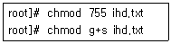
- rwxr-xr-x
- rwsr-xr-x
- rwxr-sr-x
- rwxr-xr-s
(정답률: 71%)
4. 다음과 같은 명령을 수행한 경우 기본적인 허가권이 666이라고 가정할 때 ihd.c의 허가권은 어떻게 변경되는가?
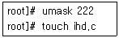
- rw-rw-rw-
- rw-rw-r--
- rw-r--r--
- r--r--r--
(정답률: 74%)
5. 하위 디렉토리를 포함한 모든 파일의 그룹을 ihd로 변경하려고 할때 사용하는 명령어로 알맞은 것은?
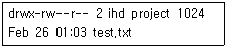
- chgrp -R ihd test.txt
- chgrp -r ihd test.txt
- chsh -R ihd test.txt
- chsh -r ihd test.txt
(정답률: 81%)
6. cdrom을 연결한 후 해제하기 위해 사용하는 명령어로 알맞은 것은?
- mount
- umount
- dmount
- unmount
(정답률: 74%)
7. 데이터 복구확률이 높은 저널링 파일 시스템이 아닌 것은 무엇인가?
- RFS
- XFS
- ext3
- xiafs
(정답률: 52%)
8. fsck의 종료 코드 값에 대한 설명으로 틀린 것은?
- 0 : 에러 없음
- 1 : 에러 수정
- 2 : 리부팅 필요
- 3 : 에러 수정 안함
(정답률: 51%)
9. 디스크의 사용량을 확인하는 df 명령어의 옵션 중 inode 값과 디스크의 크기를 KB, MB, GB의 단위로 보이게 하는 것은 무엇인가?
- -ih
- -ah
- -iP
- -aT
(정답률: 60%)
10. 디스크 quota에 대한 설명으로 틀린 것은?
- quota.user 파일에 정보가 저장된다.
- quota는 사용자별, 파일 시스템별로 적용된다.
- quota를 중단시킬 때 사용하는 명령어는 quotastop이다.
- 사용자나 그룹에게 할당된 디스크 블록의 수를 제한함으로써 사용을 제한한다.
(정답률: 60%)
11. 프로세스 명령 및 사용법에 대한 설명으로 틀린 것은 무엇인가?
- ps 명령어는 CPU 사용비율의 추정치를 보여 준다.
- ps 명령어를 통해 프로세스의 현재 상태를알 수 있다.
- 자식 프로세스가 자신의 환경을 변화시켰을 때 부모 프로세스에게는 영향을 미치지 않는다.
- kill 명령어를 통해 현재 작업 터미널을 벗어난 다른 터미널에서의 프로세스는 종료할 수 없다.
(정답률: 59%)
12. 프로세스 종료에 대한 설명으로 틀린 것은 무엇 인가?
- 자식 프로세스 종료 시 부모 프로세스에게 종료를 알린다.
- 프로세스 테이블의 항을 제외한 자신의 문맥을 파괴한다.
- 프로세스 종료는 stop() 시스템 호출을 수행함으로써 끝나게 된다.
- 프로세스 종료될 때 프로세스와 연관된 영역과 메모리를 반납하게 된다.
(정답률: 42%)
13. 다중작업을 수행하기 위한 프로세스에 대한 설명으로 틀린 것은 무엇인가?
- suspend는 메모리에 올라가 있지만 정지된 상태를 의미한다.
- backgroud로 실행하기를 원하는 경우 명령어 뒤에 & 를 붙인다.
- suspend 상태를 backgroud로 전환하기 위해서는 bg & <작업번호>를 입력한다.
- foreground 상태에서 실행이 끝나기 전에 Ctrl + z를 누르면 suspend 상태로 변화된다.
(정답률: 51%)
14. 프로세스 간의 메시지를 보내기 위한 통신 수단을 무엇이라고 하는가?
- signal
- protocol
- interface
- system call
(정답률: 66%)
15. 좀비 프로세스에 대한 설명으로 알맞은 것은?
- 프로세스는 프로세스 테이블에 각각의 프로세스 아이디와 사용하는 자원을 실행시킨다.
- 실행시키고 감시하는데 필요한 프로세스이다.
- 실행이 정상적으로 완료된 프로세스를 말한다.
- 실행이 끝났는데도 종료되지 못하고 메모리 상에 남아 있는 프로세스이다.
(정답률: 89%)
16. 다음과 같은 명령을 수행할 경우 최종 ps의 결과는 무엇인가?
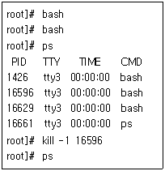
- PID 16596는 즉시 제거된다.
- 모든 bash 프로세스가 제거된다.
- PID 16596과 16629는 동시에 제거된다.
- PID 16596은 인터럽트 상태로 Ctrl +c를 치면 제거된다.
(정답률: 29%)
17. 부모 프로세스와 자식 프로세스 간의 상관관계를 확인할 수 있는 명령어는 무엇인가?
- top
- post
- nohup
- pstree
(정답률: 85%)
18. top 명령어의 옵션 값 중 유휴 프로세스를 출력하는 것은 무엇인가?
- i
- k
- m
- t
(정답률: 39%)
19. 프로세스 우선순위에 대한 설명으로 틀린 것은?
- 우선순위의 값이 작을수록 우선순위가 높은 것이다.
- nice 명령어를 통해 우선순위를 변경할 수 있다.
- 프로세스의 우선순위 값은 고유번호로 프로세스 마다 다른 값을 가지며 변경할 수 없다.
- nice 명령어를 옵션 값 없이 사용하면 상속받은 현재 순서의 우선권을 출력한다.
(정답률: 77%)
20. cron 명령에 대한 설명으로 틀린 것은?
- 데몬 제어 파일로 crontab을 사용한다.
- 주기적으로 반복되는 데몬을 처리할 수 있는 명령어이다.
- /etc/cron.allow에 등록된 사용자만 cron을 사용 할 수 있다..
- 월, 일, 시간 단위 실행 작업을 제어하나 요일을 지정할 수 없다.
(정답률: 80%)
21. 다음 쉘(shell)에 대한 설명 중 틀린 것은?
- 리눅스 시스템에 로그인(login)하면 사용자에게 쉘이 부여된다.
- 쉘은 리눅스 커널 내에 존재하여 사용자가 입력한 명령을 수행한다.
- Bash 혹은 Bourne-Again Shell은 리눅스에서 가장 많이 사용되는 쉘 중 하나이다.
- 쉘은 사용자의 명령을 리눅스 커널에 요구하는 일종의 프로그램이다.
(정답률: 39%)
22. 다음 중 리눅스 명령어 chsh에 대한 설명으로 알맞은 것은?
- 현재 사용 중인 쉘(shell)의 터미널 설정을 볼 수 있다.
- 현재 사용 중인 쉘(shell)의 터미널 설정을 변경할 수 있다.
- 현재 사용 중인 쉘(shell)의 환경 설정을 변경 할 수 있다.
- 현재 사용 중인 쉘(shell)의 종류를 변경할 수 있다.
(정답률: 57%)
23. 다음 중 리눅스 명령어 “stty kill ^A”를 수행한 후 발생할 수 있는 사항에 대한 설명으로 알맞은 것은?(^A = Ctrl+A)
- 키보드에서 Ctrl+A를 입력하면 최근에 입력한 한 단어(word)가 지워진다.
- 키보드에서 Ctrl+A를 입력하면 가장 최근에 수행된 프로세스(process)가 종료된다.
- 키보드에서 Ctrl+A를 입력하면 최근에 입력한 한 줄(line)이 지워진다.
- 키보드에서 Ctrl+A를 입력하면 현재 수행 중인 쉘(shell)이 종료된다.
(정답률: 33%)
24. Bourne 쉘의 환경변수 HOME에 대한 설명으로 알맞은 것은?
- 환경변수 HOME의 값은 로그인 쉘의 프로세스 번호를 가지고 있다.
- 환경변수 HOME의 값은 쉘 수행 중 현재작업 디렉토리 이름을 가지고 있다.
- 환경변수 HOME의 값은 로그인 시 처음 위치하는 디렉토리 이름을 가지고 있다.
- 환경변수 HOME의 값은 명령어 cd를 사용하면 변경되기도 한다.
(정답률: 62%)
25. 쉘에서 파이프(pipe)의 사용에 대하여 바르게 설명한 것은?
- 파이프를 만드는 심볼은 ‘>’이다.
- 파이프는 어떤 명령의 표준 출력을 파일로 보내는 기능이다.
- 파이프는 어떤 명령의 표준 입력을 파일에서 읽는 기능이다.
- 파이프는 어떤 명령의 표준 출력을 다른 명령의 표준 입력으로 보내는 기능이다.
(정답률: 62%)
26. 다음 쉘(shell) 환경변수 중 리눅스 명령어 “cd”의 수행 결과에 따라 그 값이 변하는 것은?
- HOME
- PWD
- PS1
- PATH
(정답률: 68%)
27. 쉘(shell)에서 어떤 명령 “com”을 수행하면서 생성되는 표준 출력을 기존의 파일인 “file”의 끝 부분에 추가(append)하는 명령어로 알맞은 것은?
- com >> file
- com << file
- com | file
- com & shell
(정답률: 70%)
28. 쉘(shell)에서 파이프(pipe)와 리디렉션(redirectoin)을 동시에 사용한 명령어 “com1 | com2 > file1”에 대한 설명으로 틀린 것은?
- 명령어 com1 및 com2 사이에 하나의 파이프가 생성된다.
- 명령어 com1 및 com2는 동시에 수행되면서 통신한다.
- 명령어 com1 및 com2의 표준 출력 결과가 파일 file1에 동시에 저장된다.
- 이 명령어 수행 전 file1이 존재하지 않으면 새로 생성된다.
(정답률: 45%)
29. vi 및 emacs 에디터에 대한 다음 설명 중 틀린 것은?
- vi 에디터는 모드(mode)가 있는 에디터이다.
- emacs 에디터는 모드(mode)가 없는 에디터이다.
- vi 에디터는 elisp이라는 해석형(interpreter) 언어가 제공된다.
- emacs 에디터는 GNU에서 개발하였다.
(정답률: 47%)
30. vi 에디터의 명령 모드에서 파일의 1000번째 줄(line)로 바로 가기 위한 방법으로 알맞은 것은?
- 1000
- :1000
- go 1000
- :go 1000
(정답률: 60%)
31. vi 에디터의 명령에 대한 설명으로 틀린 것은?
- fx : 현재 커서 위치에서 오른쪽으로 문자 x를 찾기
- dw : 현재 커서 위치에서 오른쪽 한 단어 삭제 하기
- :3,6d : 3번째 줄에서부터 6개의 줄을 삭제하기
- u : 최근 수행한 명령 되돌리기
(정답률: 28%)
32. vi 에디터에서 커서 이동방법에 대한 설명으로 틀린 것은?
- l : 커서를 한 문자 오른쪽으로 이동
- 0 : 커서를 현재 줄의 처음으로 이동
- $ : 커서를 현재 줄의 끝으로 이동
- w : 커서를 왼쪽 방향에 있는 이전 단어의 첫 문자로 이동
(정답률: 33%)
33. emacs 에디터의 “Alt-x query-replace” 명령을 사용하여 단어 “work”를 “study”로 치환하고자 할 때 찾은 단어 “work”에 커서가 이동되어 있다. 이때 사용할 수 있는 명령에 대한 설명 중 틀린 것은?
- y : 현재 찾은 단어 “work”를 “study”로 치환함
- n : 현재 찾은 단어 “work”를 치환하지 않고 그대로 둠
- x : 치환 작업을 종료함
- ! : 앞으로 찾는 모든 “work”를 “study”로 치환함
(정답률: 32%)
34. emacs 편집기의 커서 이동 명령어에 0 G0 gB대한 설명으로 틀린 것은?
- Ctrl-a : 커서를 현재 줄의 첫 문자로 이동한다.
- Ctrl-z : 커서를 현재 줄의 끝 문자로 이동한다.
- Alt-> : 커서를 파일의 끝 문자로 이동한다.
- Alt-v : 커서를 한화면 뒤의 문자로 이동한다.
(정답률: 39%)
35. 기 설치된 rpm 패키지 “mysql-4.1.11-2”에 포함된 모든 파일의 목록을 보려고 할 때 사용하는 명령으로 알맞은 것은?
- rpm -qi mysql-4.1.11-2
- rpm -qa mysql-4.1.11-2
- rpm -ql mysql-4.1.11-2
- rpm -qf mysql-4.1.11-2
(정답률: 43%)
36. 명령어 “rpm -V sendmail”을 수행하니 화면에 “.......T c /etc/mail/sendmail.cf”가 출력되었다. 이 출력의 의미로 알맞은 것은?
- 패키지 설치 후 파일 /etc/mail/sendmail.cf의 모드가 변경되었다.
- 패키지 설치 후 파일 /etc/mail/sendmail.cf의 최종 변경 시간이 변경되었다.
- 패키지 설치 후 파일 /etc/mail/sendmail.cf의 크기가 변경되었다.
- 패키지 설치 후 파일 /etc/mail/sendmail.cf의 MD5 체크섬이 변경되었다.
(정답률: 47%)
37. dpkg 명령어 사용에 대한 설명 중 틀린 것은?
- dpkg --install 패키지 : 주어진 패키지를 설치 한다.
- dpkg --delete 패키지 : 주어진 패키지를 제거 한다.
- dpkg --listfiles 패키지 : 주어진 패키지에 포함된 파일 목록을 출력한다.
- dpkg --search 파일이름 : 주어진 파일 이름이 포함된 패키지를 찾는다.
(정답률: 44%)
38. gzip 및 gunzip과 관련된 리눅스 명령어에 대한 설명 중 틀린 것은?
- zmore 압축파일 : 주어진 압축 파일의 내용을 출력한다.
- zgrep 패턴 압축파일 : 주어진 패턴이 압축 파일에 있는지 찾는다.
- zwc 압축파일 : 주어진 압축 파일의 문자 수, 단어 수 및 라인 수를 센다.
- zdiff 압축파일 일반파일 : 주어진 압축 파일과 일반 파일의 차이를 출력한다.
(정답률: 44%)
39. 파일 확장자가 .tgz인 파일 “package.tgz”에 대한 설명으로 틀린 것은?
- 이 파일은 명령어 tar로 파일 묶기를 한 후 압축한 파일이다.
- 이 파일은 명령어 bunzip2를 사용하여 압축을 풀 수 있다.
- 명령어 “tar xvzf package.tgz”을 사용하면 압축 및 묶기 이전 파일들이 생성된다.
- 명령어 “gzip -dc package.tgz | tar xvf -”를 사용하면 압축 및 묶기 이전 파일들이 생성된다.
(정답률: 59%)
40. 다음 tar에 대한 설명으로 가장 알맞은 것은?
- tar cf dir.tar : 디렉토리 dir 아래의 모든 파일을 묶어서 파일 dir.tar을 만든다.
- tar xf dir.tar : tar로 묶인 파일 dir.tar을 현재 디렉토리에 푼다.
- tar lf dir.tar : tar로 묶인 파일 dir.tar을 구성하는 파일 목록을 출력한다.
- tar af dir.tar : 디렉토리 dir 아래의 모든 파일을 묶어서 dir.tar에 추가한다.
(정답률: 40%)
41. 다음 압축 프로그램에 대한 설명 중 틀린 것은?
- gzip : 리눅스에서 가장 많이 사용되는 압축 프로그램이다.
- zip : 도스나 윈도우즈에서 많이 사용되는 압축 프로그램이다.
- bzip2 : 압축률이 높아서 최근 리눅스에서 많이 사용되기 시작했다.
- tar : 리눅스와 윈도우즈에서 동시에 많이 사용되는 압축 프로그램이다.
(정답률: 58%)
42. 어떤 프로그램의 소스파일인 “pgm-1.2.tgz”를 다운 받아 설치하는 순서가 다음과 같다. ( )안에 들어갈 내용으로 알맞은 것은?
- bunzip2 수행
- make 수행
- rpm 수행
- dpkg 수행
(정답률: 72%)
43. 프린터 설정과 설치에 관련된 정보가 기록되는 파일은 무엇인가?
- printcap
- printtab
- printconf
- printcups
(정답률: 52%)
44. 프린터 큐에 대한 설명으로 틀린 것은?
- 프린터 명령을 실행했을 때 대기하고 있는 상태를 말한다.
- 프린터에서 사용할 이름과 임시로 저장할 스풀 디렉토리로 사용한다.
- 네트워크 프린터의 점유 비율을 조절하기 위해 스풀 디렉토리의 용량을 조절한다.
- 프린트 도중 정전 등의 이유로 전원이 꺼질 경우 스풀링되어 있는 파일은 무조건 지워진다.
(정답률: 70%)
45. 리눅스 프로세스의 셧다운(shutdown) 레벨은 무엇인가?
- 0
- 1
- 5
- 6
(정답률: 47%)
46. Samba Printer 설정에 대한 설명으로 틀린 것은?
- 패스워드(Password)를 통해 사용자의 접근을 제한할 수 있다.
- 작업 그룹(Workgroup) 항목에는 프린터가 속한 워크그룹의 이름을 적는다.
- 사용자(User name)에는 프린터가 공유되어 있는 이름을 적는다.
- Samba server host에는 프린터가 물리적으로 연결된 컴퓨터의 이름을 적는다.
(정답률: 34%)
47. lpq 명령어를 통해 모니터링 할 수 있는 내용이 아닌 것은 무엇인가?
- Server의 IP 주소
- Unspooler의 PID
- Queue되어 있는 작업 수
- Server의 프린트 진행 상태
(정답률: 46%)
48. 주변장치를 활용하는 방식에 대한 설명으로 틀린 것은?
- 커널 컴파일을 통해 새로운 디바이스를 인식 시킬 수 있다.
- 사운드 카드는 플러그 앤 플레이 기능을 통해 쉽게 인식된다.
- 키보드의 언어 변경은 /etc/sysconfig/gpm파일로 할 수 있다.
- 마우스는 시리얼, 패러럴, PS/2, USB 타입과 휠 마우스 등을 지원한다.
(정답률: 49%)
2과목: 리눅스 활용
49. X 윈도우는 네트워크 기반의 그래픽 환경으로 서로 다른 이 기종 간에 함께 사용할 수 있다. 리눅스 시스템에서 실행되고 있는 X 윈우 프로그램을 MS-Windows의 화면에 나타나도록 하기 위하여 MS-Windows에서 필요로 하는 필수적인 프로그램은 어느 것인가?
- X 클라이언트 프로그램
- X 서버 프로그램
- X 윈도우 데스크톱 환경
- X 그래픽 프로그램
(정답률: 23%)
50. 다음 중 X 윈도우 설정 프로그램인 system-configdisplay에서 설정할 수 없는 것은?
- 해상도
- 색상수
- 이중 헤드
- 모니터의 수직 주파수
(정답률: 48%)
51. 리눅스 시스템을 부팅하였더니 텍스트 모드로 부팅되었다. 그래픽 모드로 변경하여 사용하는 방법이 아닌 것은?
- startx 명령어 사용
- /etc/inittab에서 id:3:initdefault: 부분을 id:5:initdefault: 로 변경하고 리부팅 한다.
- xinit 명령어 사용
- XFree86 명령어 사용
(정답률: 39%)
52. 다음 중 GNOME에 대한 설명으로 틀린 것은?
- 윈도우 매니저를 선택하여 사용할 수 있으며, 윈도우 매니저가 바뀌면 데스크톱의 모든 부분이 바뀐다.
- GNOME은 GTK+ 라이브러리를 기반으로 만들어지고 있다.
- GNOME의 소스는 인터넷 상에 공개되어 있다.
- GNOME은 GNU Network Object Model Environment의 약자이다.
(정답률: 64%)
53. GNOME 데스크톱의 패널에서 할 수 있는 작업이 아닌 것은?
- 패널 추가하기
- 패널 숨기기
- 패널 이동하기
- 패널 복사하기
(정답률: 39%)
54. 다음 윈도우매니저 중 계통상 최초의 윈도우 매니저로 알맞은 것은?
- 윈도우 메이커(Window Maker)
- twm
- 애프터스텝(AfterStep)
- fvwm
(정답률: 33%)
55. 다음은 무엇에 대한 설명인가?
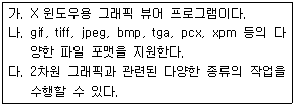
- BMP
- XMMS
- xv
- GIMP
(정답률: 32%)
56. 다음 중 fvwm에 대한 설명으로 틀린 것은?
- 마우스의 가운데 버튼은 윈도우 동작, 이동, 크기 조정, 아이콘화, 삭제, 닫기 등의 메뉴를 가지고 있다.
- 아이콘은 자주 사용하는 프로그램들을 쉽게 실행시킬 수 있도록 바탕화면에 배치시켜 둔것을 말한다.
- 마우스의 오른쪽 버튼은 사용자가 실행시켜 놓은 프로그램들의 리스트를 보여준다.
- 버튼바(Button Bar)는 왼쪽의 윈리스트(WinList)와 오른쪽의 페이저(Pager)로 구성되어 있다.
(정답률: 28%)
57. 다음은 LAN에서 사용하는 토폴로지 중 어느것에 해당하는 설명인가?
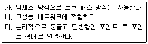
- 망 토폴로지
- 링 토폴로지
- 버스형 토폴로지
- 스타 토폴로지
(정답률: 68%)
58. 다음 회선교환과 패킷교환의 특성을 교환기술 특성별로 구분하여 정리한 것 중 틀린 것은?(교환기술특성, 회선교환, 패킷교환)
- (대역폭사용형식), (대역폭동적사용), (고정된 대역폭전송)
- (전송경로의형태), (전체전송을 위해 전송로 설립), (패킷마다전송로 설립)
- (호출된 지국이 바쁠 때), (busy 신호를 보냄), (전달되지않으면 송신자에게 통지됨)
- (오버헤드 비트), (호출후에는오버 헤드 비트없음), (각 패킷마다 오버헤드 비트 있음)
(정답률: 32%)
59. 다음 중 리피터와 브리지의 동일한 기능은 무엇 인가?
- 통신망에 과다하게 연결된 컴퓨터들로 인한 병목현상을 줄일 수 있다.
- 서로 다른 물리적 매체로 구성된 통신망을 연결할 수 있다.
- 통신망의 범위와 길이를 확장할 수 있다.
- 서로 다른 통신망 구조의 통신망을 연결할 수 있다.
(정답률: 46%)
60. 다음은 ISO에서 개발한 OSI 모델의 7개 계층 중 어느 계층에 대한 설명인가?
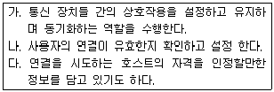
- 표현계층
- 세션계층
- 네트워크계층
- 데이터링크계층
(정답률: 51%)
61. TCP/IP의 응용계층(application layer)에서 사용하는 프로토콜과 그 서비스 내용에 대한 설명으로 틀린 것은?
- telnet : 네트워크를 통한 암호화 원격 로그인을 제공한다.
- SMTP : 전자메일을 전달한다.
- NFS : 네트워크상의 다양한 호스트들이 파일을 공유할 수 있도록 해준다.
- FTP : 양방향 파일 전송에 사용된다.
(정답률: 55%)
62. 리눅스 시스템에서 /etc/services에 정의되어 있는 내용은 무엇인가?
- 프로토콜 번호와 해당 프로토콜
- 소켓 번호와 해당 서비스
- IP주소와 제공되는 서비스
- 포트 번호와 해당 응용프로세스
(정답률: 39%)
63. 다음 표에서 호스트의 IP주소와 서브넷 마스크, 서브넷이 올바르게 짝지어진 것은?(IP주소, 서브넷 마스크, 서브넷)
- (123.234.45.7) (255.255.128.0) (123.234.128.0)
- (134.56.85.1) (255.255.1.1) (134.56.1.1)
- (55.27.98.156) (255.224.0.0) (55.0.0.0)
- (203.128.46.9) (255.255.255.0) (203.128.46.1)
(정답률: 24%)
64. FTP(File Transfer Protocol)를 사용하는 중에 파일의 전송상태를 눈으로 확인하고 싶을 경우 사용하는 명령어로 알맞은 것은?
- put
- hash
- progress
- check
(정답률: 58%)
65. 다음 중 암호화를 통해 보안을 고려하고 있는 인터넷 서비스는 어느 것인가?
- FTP
- SSH
- Telnet
- IRC
(정답률: 76%)
66. WWW(World Wide Web)을 사용할 수 있는 웹브라우저 중에서 text 방식으로만 동작하는 것은 어느 것인가?
- Mozilla
- Netscape
- Lynx
- Firefox
(정답률: 40%)
67. 다음 FTP(File Transfer Protocol) 클라이언트 중에서 사용자 인터페이스 측면에서 특성이 다른 하나는 어느 것인가?
- gFTP
- ncftp
- cftp
- lftp
(정답률: 50%)
68. 다음 중 NCSA(National Center for Supercomputing Application)에서 개발한 최초의 그래픽 통합 웹브라우저로서 인터넷의 대중화에 큰 역할을 한 것은 어느 것인가?
- Netscape
- Mozilla
- Internet Explorer
- Mosaic
(정답률: 20%)
69. 다음은 어떤 인터넷 서비스에 대한 설명인가?
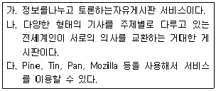
- 블로그(Blog)
- 유즈넷 뉴스그룹(Usenet News Group)
- 인터넷 폰(Internet Phone)
- IRC(Internet Relat Chat)
(정답률: 69%)
70. IP주소가 123.45.6.7이고 서브넷 마스크가 255.255.128.0인 리눅스 시스템에 웹서버가 운영되고 있다. 이 시스템에서 웹브라우저를 실행시킨 후 127.0.0.1로 접속을 시도하면 어떤 시스템의 웹페이지가 나타날까?
- 123.45.0.1
- 123.45.6.7
- 127.45.6.7
- 255.255.128.7
(정답률: 46%)
71. ifconfig 명령을 사용하여 IP주소 설정을 한 후에 재부팅을 하니 IP주소 설정이 해제되었다. 재부팅 후에도 지속적으로 설정이 남아있도록 하려면 어떤 설정 파일을 수정해야 하는가?
- /etc/network
- /etc/sysconfig/network
- /etc/sysconfig/network-scripts/ifcfg-eth0
- /etc/sysconfig/network-scripts/ifcfg-lo
(정답률: 57%)
72. 새로운 리눅스 시스템에서 인터넷을 사용하기 위하여 아래와 같이 네트워크 설정을 하였다. 다음 중 설정하지 않아도 인터넷을 사용하는데 지장이 없는 것은?
- ifconfig 명령을 사용하여 시스템의 IP 주소를 설정하였다.
- route 명령을 사용하여 게이트웨이를 설정 하였다.
- /etc/hosts 파일에 호스트 이름을 등록하였다.
- ifconfig 명령을 사용하여 시스템의 서브넷 마스크를 설정하였다.
(정답률: 67%)
73. 어떤 리눅스 시스템이 속해있는 서브넷이, 외부에 있는 시스템과 접속하기 위하여 다음과 같이 라우팅 테이블을 설정하였다. ( )안에 들어갈 알맞은 단어는 무엇인가?
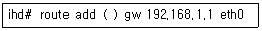
- default
- all
- option
- routetable
(정답률: 67%)
74. ifconfig, route 등의 명령어로 설정할 수 있는 것들을 X 윈도우상의 GUI 프로그램에서도 설정할 수 있다. 다음 중 네트워크 설정을 할 수 있는 X윈도우상의 GUI 프로그램은 어느 것인가?
- network-cfg
- network-config
- system-network-config
- system-config-network
(정답률: 35%)
75. 다음 설명에 해당하는 인터넷 접속 환경은 무엇인가?
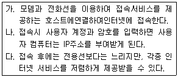
- ADSL
- 전화접속 어댑터
- SLIP/PPP
- VDSL
(정답률: 45%)
76. 네트워크 설정을 모두 마치고 IP주소로 다른 호스트에 접속할 수 있었으나 도메인 네임을 사용한 접속은 실패하였다. 어떤 파일에 어떤 내용을 설정 하여야 도메인 네임으로 접속을 할 수 있을까?
- /etc/sysconfig/network , 도메인네임서버
- /etc/resolv.conf , 도메인네임서버
- /etc/sysconfig/network , 호스트이름
- /etc/resolv.conf , 호스트 이름
(정답률: 61%)
77. 운영 체제를 사용하는 다음 분야 중에서 리눅스가 가장 많이 진출한 시장순으로 바르게 정렬된 것은?
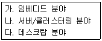
- 가-나-다
- 다-나-가
- 나-가-다
- 나-다-가
(정답률: 44%)
78. 리눅스의 시장 점유율을 높이기 위한 방법이 아닌 것은 무엇인가?
- 대기업들의 리눅스 지원 유도
- 우수한 전문 리눅스 기술자의 배출
- 고객에게 신뢰를 줄 수 있는 우수 사례 발굴
- 이익 창출을 위해 오픈 소스(open source)의 전면 유료화
(정답률: 81%)
79. 다음 중 리눅스의 활용 분야로 알맞지 않은 것은?
- 모바일 단말장치
- MS-SQL 데이터베이스 서버
- 스프레드시트(Spread sheet)를 사용하는 업무용 PC
- 클러스터 아키텍처
(정답률: 23%)
80. 리눅스가 임베디드 시스템에 사용하기 적합한 이유를 모두 고른 것은?
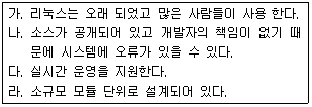
- 가, 나, 다
- 가, 라
- 나, 다, 라
- 가, 다, 라
(정답률: 55%)